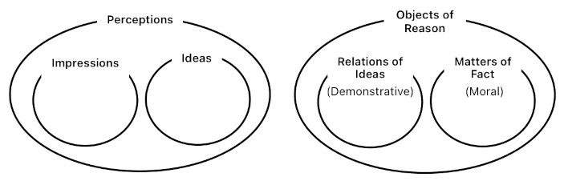

type: sách
author:
- "[[Deleuze]]"
sources:
- "[[Deleuze - Empirisme et subjectivité.pdf]]"
status: readingthuyết bất khả tri
Vũ trụ không thể biết được.
Đạo người là sáng tạo.
Liên kết: thuyết hoài nghi, Hobbes, Hume, David.
Thuyết duy nghiệm
Đối lập với: thuyết duy lý, thuyết siêu nghiệm.
Gần duy vật nhưng không được nhầm lẫn.
Hume, David đã mở ra một chiều kích mới cho thuyết duy nghiệm, bằng cách chuyển nó thành lý thuyết về quan hệ, của phép VÀ, sẽ được tiếp nối ở Russell và Whitehead.
Liên kết: sự cấu thành của chủ thể, Empérisme transcendantal
Phả hệ: Lucrèce, Hume, David, Nietzsche, Bergson, Deleuze.
MOC, Thuyết duy nghiệm và tính chủ thể
Thuyết duy nghiệm và tính chủ thể
1. Trọng tâm
Deleuze đã đọc Hume từ góc độ hậu Kant xoay quanh câu hỏi về sự cấu thành của chủ thể.
Ông đồng thời cũng đặt ra:
- Lý thuyết về quan hệ
- Lý thuyết về cái nhân tạo.
- thuyết liên tưởng, sự vận hành tích cực của Trí tưởng tượng
- cảm xúc và xã hội
- Niềm tinvà nhận thức
2. Cấu trúc & luận đề chính
3. Ghi chú
2026-10-23 — Chương / Trang
Luận điểm của tác giả:
Trích dẫn :
Nhận xét của tôi:
Câu hỏi:
4. Câu hỏi
Mục lục:
- Vấn đề nhận thức và vấn đề luân lý.
- Thế giới văn hóa và quy tắc chung.
- Quyền năng của trí tưởng tượng trong luân lý và trong nhận thức.
- Thượng Đế và Tôn Giáo.
- Thuyết Duy Nghiệm Và Tính Chủ Thể.
- Các nguyên lý của bản tính con người.
__
Resouces
Bản dịch (đang hoàn thiện): Deleuze, Thuyết duy nghiệm và tính chủ thể
Commentaires:
Mô hình toán học Hume:
Hume, David
Triết gia Scotland, 1711 – 1776.
Tác phẩm chính
- A Treatise of Human Nature (1739-40).
- An Enquiry Concerning Human Understanding (1748).
- Political Discourses (1752–1758).
- The History of England (1754–1761).
Đại diện cho truyền thống Thuyết duy nghiệm.
Dưới góc nhìn của Deleuze: vấn đề nền tảng của Thuyết duy nghiệm là sự cấu thành của chủ thể chứ không phải vấn đề nhận thức luận.
Deleuze đã đọc Hume từ góc độ của triết học hậu Kant (nhất là Maimon).
Chủ thể được cấu thành trong trí tưởng tượng, bởi các nguyên tắc của bản tính sẽ định tính, tổ chức Trí tưởng tượng.
Chủ thể là một chủ thể thực hành.
Chống lại thuyết khế ước, vì khế ước là sự hạn chế tính ích kỉ, trong khi vấn đề của xã hội là mở rộng lòng thông cảm. Xã hội làm được việc này bằng cách sáng tạo ra các thiết chế, để thoả mãn xúc động, lợi ích.
--
Học thuyết về biện pháp nhân tạo, nguỵ tạo tương tự quan điểm của Tuân Tử.
Liên kết: thuyết bất khả tri, thuyết hoài nghi.
Tags: #duynghiem

Phê phán ý niệm trừu tượng, phê phán quan niệm vật chất


Nhân tạo
Lợi ích
Tinh thần
Đồng nhất với tập hợp ý niệm, với trí tưởng tượng.
Bản tính của tinh thần là vượt quá, là thói quen, khuynh hướng. Tinh thần là phát minh, sáng tạo, tổng quát hoá. Nó tin.
bản tính con người
Cổ Điển:
#quidsit : bản tính con người là có lý tính, có lời nói, là sống trong xã hội, chính trị, thành quốc.
Hiện đại:
Với Hume, David, bản tính con người được cấu thành bởi các nguyên lý khác nhau, các nguyên lý này không phải siêu việt ?
Tính thường hằng và đồng đều
Khuynh hướng
Đối tượng duy nhất của khoa học tâm trí
CHỦ THÊ
Vấn đề trọng tâm của Thuyết duy nghiệm.
Chủ thể là tinh thần được cố định, được tổ chức thành hệ thống.
Chủ thể tin vào sự hiện hữu của đối tượng bên ngoài.
Tinh thần vượt quá dữ kiện
Mục tiêu của luân lý, công lý là thiết lập một toàn thể, là tích hợp thành một toàn thể những lòng thông cảm.
- Vấn đề của cái toàn thể,Bergson, Kant.
- Luân lý có được nhờ áp dụng các quy tắc chung của sự sở hữu. Nhờ hai nguyên lý mở rộng và điều chỉnh, tạo ra cả một thế giới luân lý, công lý. Tức một thế giới mà những cảm xúc và lợi ích cá nhân nhường chỗ cho các quy tắc khác.
Thiên hướng, cảm xúc Phản tư , trở thành xã hội. Cảm xúc vượt quá lợi ích riêng.
Thiết chê
Biện pháp
Sự can thiệp của giác tính
Chính là để biến một cảm xúc trở thành xã hội.
cơ chế sơ đồ
Quy tắc chung
Lợi ích tập thể
Giác tính/ Trí năng
Cảm xúc
lý tính, Hume không sinh ra hành động.
Xem Spinoza, lý tính muốn tác động lên hành động thì phải sinh ra một cảm xúc mạnh (chính là nhân quả tất yếu)
Luân lý bắt nguồn từ quy ước nhân tạo, sinh ra trong xã hội. Nguồn gốc của nó bắt nguồn từ việc giải quyết sự sở hữu, vì sự sở hữu sinh ra mâu thuẫn.
Đối lập với: quan niệm công lý của Plato, có nguồn gốc siêu việt.
Đối lập với Công lý xét như trao đổi, có nguồn gốc thương mại.
sở hữu
Sở hữu dựa trên lòng vị kỉ, dựa trên một cảm xúc tự nhiên của con người, nhưng quy tắc chung của sự sở hữu chính là cái nhân tạo, Hume, giúp vượt quá, mở rộng lòng vị kỉ để đạt đến một xã hội công chính.
Dựa trên một thiên hướng tự nhiên để đổi hướng chữ không thay đổi nó.
Luân lý, công lý
Theo nghĩa xã hội, chỉ ở trong xã hội mới xuất hiện Công lý, lập trường gần với Spinoza, thuyết khế ước.
- không thể là kết quả của lý tính (vì lý tính không gây ảnh hưởng lên hành động).
- không thể sinh ra từ các cảm xúc nền tảng vì công lý bao gồm vô số các xúc động khác, và thường có tính cưỡng chế.
- Cảm xúc gốc: tính thiên vị và lòng cảm thông.
- công lý là mở rộng lòng cảm thông, là hạn chế sự thiên vị.
- chống lại quan niệm xem con người là vị kỉ.
Thông Cảm
Lòng thông cảm
Là khả năng đồng cảm với niềm vui, nỗi buồn, cảnh ngộ của người khác.
Dựa trên sự giống nhau.
Cái tự nhiên ở con người là một lòng thông cảm hữu hạn, là một lòng thông cảm thiên vị. Theo nguyên lý liên tưởng, ta dễ thông cảm với người giống ta, nói tiếng giống ta, với người thân, cha mẹ hơn người ngoài.
nguyên lý liên tưởng
Ba nguyên lý: giống nhau, kề nhau, nhân quả.
Lĩnh vực nhận thức.
giác tính là một tình cảm, một cảm xúc
cảm xúc cho liên tưởng một chiều, một hướng đi. Ngược lại, nguyên lý cảm xúc giả định sự liên tưởng
nguyên lý cảm xúc
lợi ích, lòng thông cảm.
cảm xúc rung động tinh thần. Theo nghĩa: hiệu ứng của cảm xúc trong tinh thần âm vang, échos, vọng âm, do đó cố định tinh thần.
Tinh thần giống như nhạc khí gõ hoặc bộ dây, không phải bộ khí.
Tình cảm luân lý: tán thành hay phản đối dựa trên Quy tắc chung
Các quy tắc chung và lợi ích chung cho tinh thần một hướng đi. Còn hơn thế, nó giúp con người định hướng, xác định thứ bậc trong cuộc sống: con người vốn có nhiều nhu cầu, có thể mâu thuẫn với nhau và mâu thuẫn trong cùng một con người. Vì vậy, cho dù các quy tắc chung vốn thường hạn chế những cảm xúc cá nhân, nhưng nó cũng là cách mà các cảm xúc tự vượt qua chính nó, nó chỉ có thể có được thoả mãn lâu dài và thường trực, theo đường vòng, bằng cái nhân tạo, Hume.
Nếu bản tính con người là vượt quá, là phát minh, sáng tạo, thì cảm thức luân lý cũng là Bản tính tự nhiên của con người.
Nói như Bergson: thói quen là cụ thể với từng trường hợp, nhưng Thói quen tạo ra thói quen là tổng quát.
Tự nhiên và văn hoá đi vào một quan hệ phức tạp. Các quy tắc cụ thể không thể được giải thích bởi bản tính tự nhiên, mà là một sự sáng tạo đích thực của con người, thông qua Trí tưởng tượng. Bản tính con người sau khi nhận được rung động của cảm xúc, sẽ được cố định và hình thành những khuynh hướng mới.
Chim làm tổ, con người xây nhà.
Tất cả chim chóc cùng loài, ở mọi thời đại và mọi xứ sở, đều xây tổ theo cách tương tự nhau: chính ở đó, chúng ta thấy sức mạnh của bản năng. Con người, ở những thời đại và những nơi chốn khác nhau, lại xây nhà theo những cách khác nhau; ở đây, chúng ta thấy ảnh hưởng của lý trí và tập quán. Chúng ta có thể rút ra một suy luận tương tự khi so sánh bản năng sinh sản với thiết chế sở hữu.
thể chế
Institution.
Thể chế xã hội phân biệt với chính trị.
Thể chế xã hội là: hôn nhân, quyền sở hữu. Qua đó tình dục và lợi ích cá nhân được thoả mãn.
Liên kết: sáng tạo, Quy tắc chung

Thuyết hoài nghi
ấn tượng đơn
Tri giác: cảm xúc, cảm giác, ý niệm, ý muốn v.v..
Ấn tượng
Mọi ý niệm đều truy được về một ấn tượng nào đó. Nếu có một ý niệm không truy được về ấn tượng thì đó là sản phẩm của tinh thần chứ không phải đến từ kinh nghiệm. Ví dụ: nhân quả.
Ý niệm
ý niệm đơn

Ít sống động
Ấn tượng phản tư
kí ức : sống động hơn
Có một ngưỡng tri giác tối thiểu. từ ngưỡng đó thì không thể phân nhỏ tri giác hơn nữa.=> thuyết nguyên tử
trí tưởng tượng: ít sống động hơn nhưng tự do hơn
Dữ kiện, cái được mang lại.
Sống động
Ấn tượng cảm giác
Ý niệm tổng quát
Trí tưởng tượng
Tuân theo quy luật của bản tính con người.
Tương tự như quy luật kết nối sự vật trong khoa học tự nhiên.
Quy luật: xác định bằng kết quả, chứ không phải nguyên nhân.
Hume, Nhận thức
Nhận thức là vượt quá cái được mang lại trong kinh nghiệm.
Nhận thức tức là tin. Niềm tin có hai loại: có cơ sở (justified) và không có cơ sở.

Tốc độ nhanh/ chậm
Huyễn tưởng
Huyễn tưởng không mất đi kể cả khi trí tưởng tượng đã được tổ chức.
Nó sẽ bịa ra những huyễn tưởng của nó: người Ai Len không có đầu óc; người Pháp không thể chín chắn.
Ý niệm Bản thể / thể cách
Ý niệm Quan hệ
sự chuyển dịch dễ dàng hay khó khăn từ ý niệm này sang ý niệm kia
KHUYNH HƯỚNG dự đoán
Giống nhau
Kề nhau
Nhân quả

Quan hệ của lý thuyết tri giác của Hume với toán tập hợp.
Tri giác rời rạc.
Sự sắp xếp, tổ chức tri giác thành các quan hệ.
Xét về mặt toán tập hợp.
**Cấp độ thứ nhất: tập hợp những phần tử
Giả sử chúng ta có những tri giác:
Một tập hợp như vậy chỉ cho biết những phần tử nào thuộc về nó.
Nó chưa cho biết các phần tử ấy xuất hiện theo thứ tự nào, tương tác với nhau thế nào, hay tại sao chúng tạo thành một kinh nghiệm thống nhất.
Cấp độ thứ hai: tập hợp có cấu trúc
Chúng ta bổ sung những quan hệ
Chẳng hạn,
Ở đây, sự thống nhất không nhất thiết nằm trong bản thân các phần tử mà nằm trong cấu trúc quan hệ.
Điều này đã giúp diễn đạt luận đề của Hume về tính ngoại tại của quan hệ.
**Cấp độ thứ ba: phép tổng hợp như một sự biến đổi
Ta có thể tiến xa hơn và định nghĩa một phép toán:
Trong đó
Chẳng hạn:
Ở đây (S) là một cấu trúc mới được hình thành từ (a,b,c).
Liên kết: Hume, David
lý tính, Hume
Lý tính là một sự quy định bình thản của xúc động, một loại cảm giác, được nhìn từ một khoảng cách xa


Thói quen
Chúng ta là các thói quen, thói quen nói Tôi.
Thói quen được hình thành từ từ và là một nguyên lý của bản tính.
Bản thân thói quen là một nguyên lý được hình thành từ các nguyên lý khác. Thói quen hình thành thói quen.
Liên kết: Deleuze, Hume, David
Quy tắc chung
Một tập hợp được quy định thì tạo ra một quy tắc chung.
Mang tính mở rộng và điều chỉnh.
Định nghĩa đúng của quy tắc chung: một cảm xúc của Trí tưởng tượng, Deleuze - Empirisme et subjectivité.pdf, tr.49.
Đời sống của con người rất gắn bó với quy tắc chung.
Nó thưởng xuyên tạo ra: từ những trường hợp cá biệt, nó suy ra một quy tắc tổng quát.
Quy tắc chung gần với sự vận hành của giác tính.